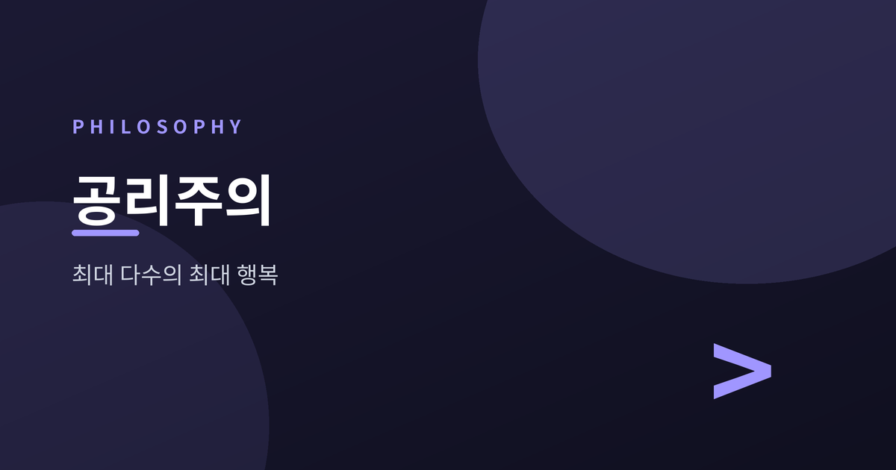
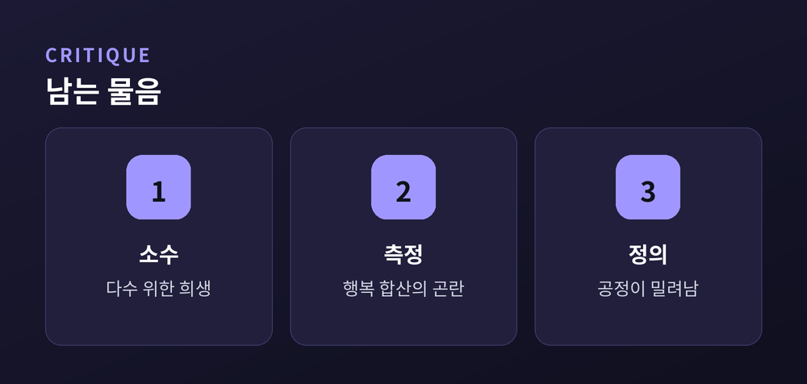

최대 다수의 최대 행복은 옳은가

이번 글에서는 공리주의라는 도덕 이론을 함께 살펴보겠습니다.
어려운 결정 앞에서 우리는 종종 "결과적으로 더 많은 사람에게 좋은 쪽"을 고릅니다. 이 소박한 직관을 하나의 원리로 다듬은 것이 공리주의입니다.
이름은 딱딱하지만 뿌리는 우리 일상에 닿아 있습니다. 벤담과 밀을 따라가며 하나씩 짚어 보겠습니다.
공리주의는 행위의 옳고 그름을 결과로 판단하는 이론입니다. 동기가 아름다웠는지가 아니라, 무엇을 만들어 냈는지를 봅니다.
그 결과를 재는 잣대는 효용(utility), 곧 행복이나 만족의 양입니다. 고통은 줄이고 즐거움은 늘리는 쪽이 좋은 행위입니다.
핵심은 행복의 총합입니다. 나 한 사람이 아니라, 영향을 받는 모든 사람의 행복을 더한 값이 커지는 선택을 옳다고 봅니다.
여기서 그 유명한 표어가 나옵니다. "최대 다수의 최대 행복." 공리주의의 나침반인 셈입니다.
시작을 연 사람은 제러미 벤담입니다. 그는 쾌락을 양으로 계산할 수 있다고 보았습니다.
강도는 얼마나 센지, 지속은 얼마나 오래가는지, 확실성은 얼마나 분명한지. 이런 기준으로 쾌락과 고통을 더하고 빼서 총량을 구하려 했습니다.
여기서는 즐거움의 종류를 따지지 않습니다. 시를 읽는 기쁨이든 놀이의 기쁨이든, 양이 같다면 같은 값입니다.
행복을 숫자처럼 다루려 한 이 대담한 시도가 공리주의의 출발점이 되었습니다.
제자 격인 존 스튜어트 밀은 한 걸음 더 나아갔습니다. 그는 쾌락에 질의 차이가 있다고 보았습니다.
밀에게는 모든 즐거움이 같지 않습니다. 정신적이고 고차원인 기쁨이 단순한 감각의 기쁨보다 더 가치 있다고 여겼습니다.
그는 이렇게 말했습니다. "배부른 돼지보다 배고픈 소크라테스가 낫다." 만족의 크기만이 아니라 그 격도 중요하다는 뜻입니다.
| 구분 | 벤담 | 밀 |
|---|---|---|
| 쾌락의 차이 | 양만 다름 | 질도 다름 |
| 판단 기준 | 총량 계산 | 격의 높낮이 |
공리주의는 강력하지만 비판도 만만치 않습니다.
첫째, 소수의 희생입니다. 다수의 행복이 커진다면, 소수의 큰 고통도 정당화될 수 있습니다. 여기서 정의와 인권이 흔들립니다.
둘째, 측정의 곤란입니다. 서로 다른 사람의 행복을 하나의 숫자로 더할 수 있을까요. 미래의 결과까지 미리 재는 일도 쉽지 않습니다.
셋째, 정의의 문제입니다. 결과의 총합만 보면, 약속이나 공정 같은 가치가 뒷전으로 밀릴 수 있습니다.

이 고민에 대한 한 응답이 규칙 공리주의입니다. 매번 결과를 계산하지 말고, 장기적으로 행복을 늘리는 규칙을 세워 그것을 따르자는 입장입니다. "거짓말하지 말라" 같은 규칙을 지키는 편이 결국 더 낫다는 것입니다.
정리하면, 공리주의는 도덕을 결과와 행복의 총합으로 설명하려는 시도입니다. 벤담은 그것을 양으로 재려 했고, 밀은 질을 더했으며, 비판자들은 소수와 정의를 물었습니다. 완벽한 답은 아닐지 몰라도, 우리가 무엇을 위해 선택하는지를 다시 묻게 하는 오래된 거울입니다.